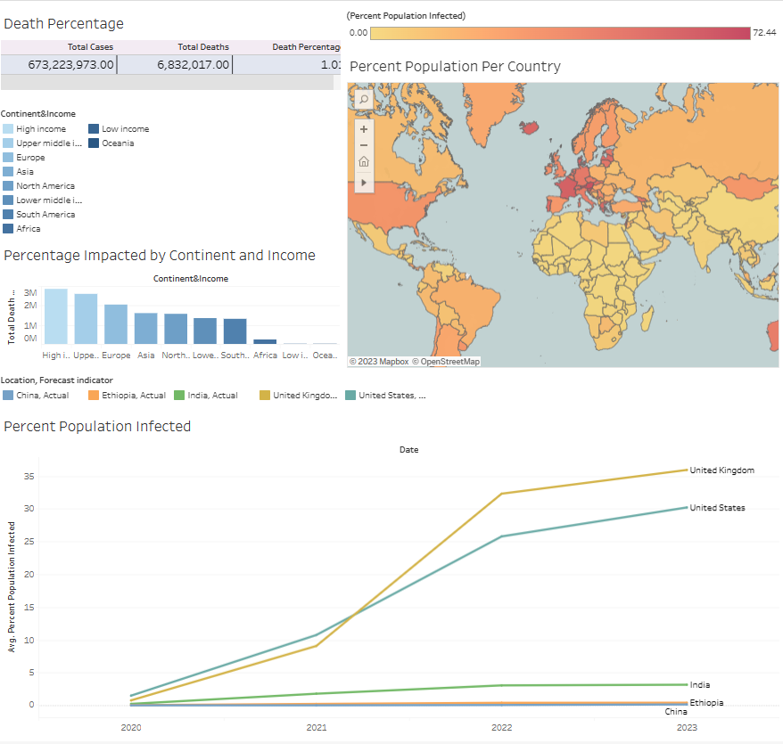
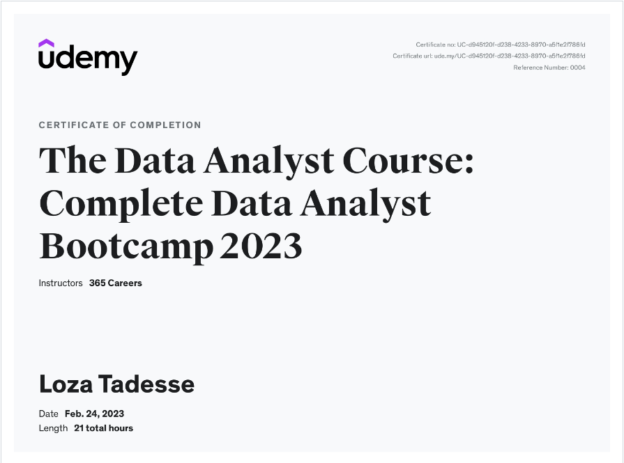

A little about me
My aim as a Computer scientist/Data analyst is to utilize my analytical abilities and proficiency in statistical modeling and programming to extract valuable insights from intricate datasets. With my expertise in data visualization, machine learning, and predictive analytics, I am capable of creating and implementing data-driven solutions that contribute to the success of any organization. Furthermore, my exceptional communication skills and talent for effective collaboration across departments make me an invaluable member of any team seeking to make informed decisions based on data.

I and my team created a shuttle system for DSU student, faculty and residents of Madison.This system combats the transportation issues for the town, provide adequate access of mobility, affordable transportation options and create an income for the university. For the long run we believe that the system will attract more students who would think the lack of transportation was an issue.
I build a predictive model to predict if an applicant is able to repay the lending company or not. We will prepare the data using Jupyter Notebook and use various models to predict the target variable.

Cleaned data and created diffrent correlation with the varibales and came to a conclusion that votes and budget had the highest correlation
Explored the data then created queries to find the death percentages in reference to countis,Percentage of infected people and total death count

I used Tableau to creat a dashboard for my Covid-19 Exploration dataset this dashboard has a bar graph represenation for the Percentage Impacted via Continue and Income then a line graph to show the Percentage Population Infected finally a map graph for the Percentage Population Per Country
Remove irrelevant data and duplicates,populated the data,Fix strutural error,Handle missing data finally

This snake game shows C# demonstrates , knowledge of object-oriented programming, graphical user interface development, and game logic implementation. It requires creating a game board, a snake object, and food objects. The player would control the snake's movement using arrow keys or WASD keys, and the game would update the snake's position on the board while checking for collisions with the walls or food. A collision with food would increase the snake's length, and a new food object would be randomly placed on the board. The game would also check for collisions with the snake's own body, which would cause the game to end.

Skills: Python programming, NumPy, pandas, data preparation - data collection, data cleaning, data preprocessing, data visualization; data analysis, data analytics